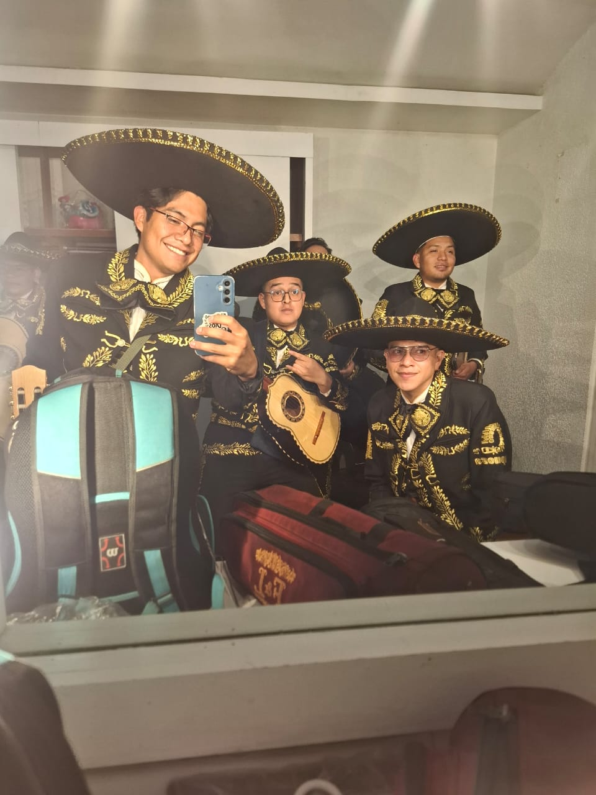

Curriculum vitae
Jonatan Cervantes Vazquez
Tecnico en programacion y estudiante de la Licenciatura en Ciencias de la Informatica. Me interesa crear soluciones claras, aprender con retos reales y colaborar con equipos donde pueda apoyar, guiar y trabajar mano a mano para lograr buenos resultados.
Perfil
Soy una persona paciente, centrada y comprometida con lo que hago. Me gustan los retos que me hacen salir de mi forma comun de pensar, asi como trabajar en equipo dando guia a quienes saben que hacer pero necesitan claridad sobre como lograrlo.
Habilidades tecnicas
Fortalezas
- Trabajo en equipo Colaboracion cercana para mantener al grupo enfocado y coordinado.
- Resolucion de retos Disposicion para explorar ideas diferentes cuando el problema lo requiere.
- Guia y comunicacion Apoyo a otras personas para convertir ideas en pasos concretos.
Educacion
Enfoque profesional
Herramientas y tecnologias
Manejo fundamentos de programacion orientada a objetos, desarrollo web con HTML, CSS y JavaScript, control de versiones con Git y GitHub, ademas de experiencia academica y practica con Java, PHP, Laravel y C++.